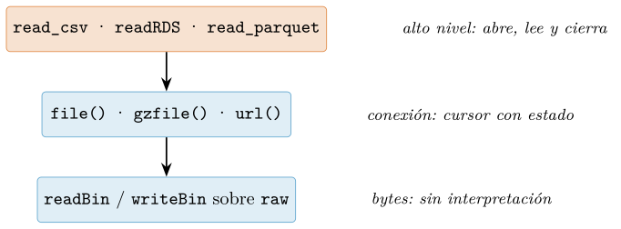
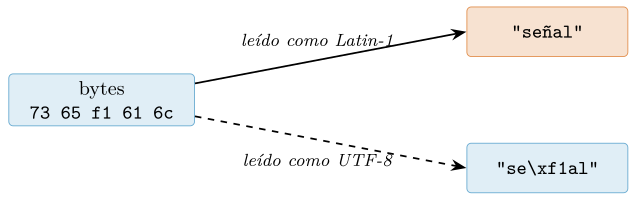
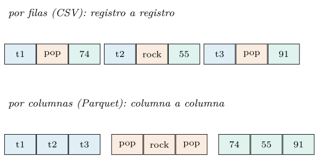
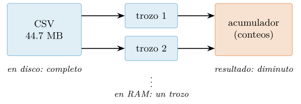
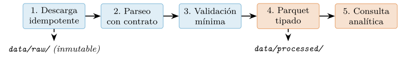

Capítulo 5. Entrada/salida, ficheros y formatos de datos
▶ Ejecutar este capítulo en Binder
La primera vez que se abre, Binder construye el entorno en la nube (unos 10-20 min); verás una pantalla de progreso. Después queda en caché y abre en segundos. Si parece que no responde, espera a que termine de construirse o vuelve a intentarlo.
Antes de la primera media, antes del primer gráfico, hay un trabajo previo del que casi nunca se habla: lograr que el dato cruce la puerta. Y al final del día, el simétrico: que lo calculado quede en algún sitio del que pueda volver. Este capítulo se dedica por entero a esa puerta —la frontera entre los bytes que viven en un disco o viajan por un cable y el objeto tipado sobre el que razonan los capítulos anteriores—. Cruzarla bien es menos glamuroso que modelar, pero decide más proyectos: un análisis brillante sobre datos mal leídos —una tilde rota, un cero inventado por el camino, una fila duplicada que nadie vio entrar— es un análisis equivocado con buena presencia.
El recorrido va de dentro hacia fuera. Primero, la maquinaria mínima: las conexiones de R, las rutas portables y la disciplina de directorios que separa lo crudo de lo derivado. Después, la codificación del texto —el error de portabilidad número uno— y los dos formatos de texto que dominan el intercambio: el CSV, con sus trampas de comillas y tipos, y el JSON, con su anidamiento. Sigue el salto a los formatos binarios columnares —Parquet y Arrow—, la serialización nativa de R y los formatos de oficina; luego el dato que no está en un fichero sino tras un servidor —HTTP, APIs, scraping responsable— y el que vive en una base de datos —SQLite, DuckDB, y el dialecto dplyr que se traduce solo a SQL—. Cierra el capítulo la pregunta incómoda —¿y si no cabe en memoria?— y un ejemplo integrador que ensambla todas las piezas: el pipeline de ingesta del catálogo musical que acompañará al resto del libro. Como siempre, cada cifra impresa se ha ejecutado antes, y los tiempos se dan como cocientes (cap. 1).
Ficheros y conexiones: la maquinaria mínima
La forma más directa de leer un fichero de texto en R no requiere ceremonia alguna: las funciones de alto nivel reciben la ruta, abren, leen y cierran sin que se note.
writeLines(c("primera linea", "segunda linea", "tercera linea"), "notas.txt")
readLines("notas.txt")
#> [1] "primera linea" "segunda linea" "tercera linea"
readLines("notas.txt", n = 2) # solo las dos primeras
#> [1] "primera linea" "segunda linea"Esa comodidad descansa sobre un objeto que conviene conocer, porque asoma en cuanto el caso se sale del guion: la conexión. Una conexión es el intermediario entre el programa y una fuente o destino de bytes —un fichero, un fichero comprimido, una URL, la propia consola— con un estado propio: está abierta o cerrada, se lee o se escribe, y recuerda por dónde va (Chambers 2008). Se crea con file() y se gobierna explícitamente:
con <- file("notas.txt", "r") # "r" = lectura de texto
readLines(con, n = 1)
#> [1] "primera linea"
readLines(con, n = 1) # la conexion RECUERDA la posicion
#> [1] "segunda linea"
close(con)La segunda llamada no vuelve a empezar: continúa donde quedó la primera. Ese estado es la diferencia profunda entre pasar una ruta —cada llamada es un mundo nuevo— y pasar una conexión —las llamadas cooperan sobre un cursor común—, y es la base de la lectura por trozos que cerrará el capítulo (§5.10). El precio del control es la obligación de cerrar: una conexión abierta retiene un descriptor del sistema operativo, y aunque el recolector de basura acaba cerrando las olvidadas —con un aviso de mal agüero—, confiar en él es tan mala idea como no cerrar un grifo porque «el depósito ya rebosará». showConnections() lista las abiertas en cualquier momento; lo profesional es que esa lista esté vacía al terminar.
¿Y si la función falla a mitad, entre el file() y el close()? El error saltaría por encima del cierre y la conexión quedaría huérfana. El idioma correcto ya se presentó con las condiciones del capítulo 3: on.exit, el compromiso que R ejecuta pase lo que pase.
leer_seguro <- function(ruta) {
con <- file(ruta, "r")
on.exit(close(con)) # se ejecuta TAMBIEN si algo falla
stop("fallo a mitad de lectura")
}
try(leer_seguro("notas.txt"))
nrow(showConnections())
#> [1] 0 <- no quedo nada abiertoEn la práctica cotidiana, la regla es de sentido común: para leer o escribir un fichero entero, funciones de alto nivel —que gestionan la conexión por dentro—; la conexión explícita se reserva para cuando aporta algo, que es exactamente en dos escenarios: procesar por trozos un fichero que no cabe (§5.10) y hablar con fuentes que no son ficheros planos. Porque ahí está la otra mitad de la idea: file() tiene una familia entera de hermanas que fabrican conexiones sobre otras fuentes, y todas se comportan igual ante quien las lee. url() convierte un recurso remoto en algo que readLines recorre como si fuera local; textConnection convierte una cadena de la propia sesión en un «fichero» —impagable para probar un parseo sin tocar el disco, y las lectoras de readr aceptan el equivalente envolviendo el texto en I()—:
csv_texto <- "id,pop\nt1,80\nt2,65"
read_csv(I(csv_texto), show_col_types = FALSE) # un string como fichero
#> # A tibble: 2 x 2
#> id pop
#> 1 t1 80
#> 2 t2 65La abstracción común —«algo de lo que salen bytes o líneas»— es la razón de que todo lo que sigue en este capítulo componga tan bien: las funciones no saben si leen un fichero, un comprimido, una URL o un texto en memoria, y no les hace falta.
Texto o bytes: los dos modos de mirar un fichero
Todo fichero es, en última instancia, una secuencia de bytes. Llamamos fichero de texto al que interpreta esos bytes como caracteres bajo una codificación (§5.3), y binario al que no admite esa interpretación: un Parquet, una imagen, un modelo serializado. R ofrece un par de funciones espejo para el segundo caso, readBin y writeBin, y un tipo para transportar bytes crudos que ya conocemos del capítulo 4: raw.
charToRaw("A") # un caracter ASCII = un byte
#> [1] 41
charToRaw("año") # la enye ocupa DOS bytes en UTF-8
#> [1] 61 c3 b1 6f
writeBin(as.raw(c(0x50, 0x41, 0x52, 0x31)), "cabecera.bin")
rawToChar(readBin("cabecera.bin", "raw", n = 4))
#> [1] "PAR1"Esos cuatro bytes no son casuales: PAR1 es la firma con la que empieza y termina todo fichero Parquet, el formato estrella de §5.6. Leer los primeros bytes de un fichero misterioso y compararlos con las firmas conocidas —PK para un zip (y por tanto un xlsx), %PDF para un PDF— es el truco de urgencias más barato del diagnóstico de datos: el fichero dice qué es aunque su extensión mienta.
La distinción texto/binario importa porque las herramientas de texto corrompen lo binario con la mejor intención: traducir saltos de línea o recodificar caracteres destroza un fichero que no era texto. La regla es binaria ella misma: bytes con readBin/writeBin (o funciones que ya trabajan en binario, como las de Parquet), texto con las demás; y ante la duda, binario, que nunca estropea nada.
Compresión transparente: la conexión que descomprime sola
Las conexiones tienen una virtud que las rutas no pueden imitar: se apilan. gzfile() crea una conexión que comprime al escribir y descomprime al leer, y cualquier función que acepte conexiones la usa sin enterarse:
con <- gzfile("generos.txt.gz", "w")
writeLines(rep("pop,rock,jazz", 1000), con)
close(con)
file.size("generos.txt.gz") # 79 B frente a los 14000 B sin comprimir
#> [1] 79
identical(readLines("generos.txt.gz"), rep("pop,rock,jazz", 1000))
#> [1] TRUEDos observaciones. La primera: readLines aceptó la ruta del .gz directamente —las funciones de lectura de R detectan la firma de gzip y descomprimen al vuelo—, de modo que mantener los ficheros de texto grandes comprimidos en disco sale casi gratis en comodidad. La segunda: la compresión de 14 000 a 79 bytes —un factor de 177— no es lo habitual, sino el caso extremo de un contenido que repite mil veces la misma línea; los datos reales rondan factores de 3 a 10. Pero la moraleja sí generaliza: el texto tabular es redundante, y los formatos de §5.6 explotan esa redundancia de manera más inteligente que un gzip aplicado encima.

Rutas portables y la disciplina de directorios
Una ruta escrita a mano es una promesa frágil: "C:\ datos\musica.csv" no existe en Linux, "/home/ana/..." no existe en el portátil de un colega, y el guion que las contiene deja de ser reproducible en el momento de compartirlo (cap. 1). El paquete fs (Hester et al. 2025) pone orden con un tipo de ruta que se construye por piezas y se comporta igual en los tres sistemas operativos:
library(fs)
p <- path("data", "raw", "musica.csv") # se construye por PIEZAS
p
#> data/raw/musica.csv
path_file(p); path_dir(p); path_ext(p)
#> [1] "musica.csv"
#> [1] "data/raw"
#> [1] "csv"
path_home() # el hogar del usuario, sea cual sea el SOLas rutas de fs son relativas al proyecto —nunca absolutas—, usan siempre la barra / —que Windows también entiende— y se imprimen con colores en la consola que distinguen directorios de ficheros. Sobre ellas, el paquete ofrece el verbo que a base R le falta en ergonomía: dir_create crea árboles enteros sin quejarse de lo que ya existe, dir_ls lista con filtros de patrón, file_info devuelve tamaños y fechas como tibble listo para analizar.
dir_create(path("proyecto", c("raw", "processed"))) # arbol de un golpe
dir_ls("proyecto/raw", glob = "*.csv") # solo los CSV
file_info("proyecto/raw/a.csv")[, c("path", "size", "modification_time")]
#> # A tibble: 1 x 3
#> path size modification_time
#> <fs::path> <fs::bytes> <dttm>
#> 1 proyecto/raw/a.csv 2 2026-07-20 08:23:47
fs_bytes(19433368) # tamanos que se leen a lo humano
#> 18.5MCrudos intocables, derivados regenerables
Más importante que la sintaxis de las rutas es la topología que nombran. Este libro adopta —y el resto de capítulos da por hecha— la disciplina clásica de dos estantes (Kleppmann 2017; Wilson et al. 2017): data/raw/ guarda el dato tal como llegó, byte a byte, y no se modifica jamás; data/processed/ guarda todo lo derivado, que debe poder regenerarse desde raw/ ejecutando el código del proyecto. La asimetría es deliberada: si mañana aparece un error en la limpieza, se corrige el código y se reprocesa; el original sigue intacto y nadie tiene que volver a pedirlo a la red ni preguntarse qué versión era. Un fichero crudo que se «arregla a mano» es un dato cuya procedencia acaba de morir.
La convicción se puede convertir en barrera física: quitar el permiso de escritura convierte el descuido en error visible.
file_chmod("proyecto/raw/a.csv", "a-w") # solo lectura para todos
try(writeLines("y", "proyecto/raw/a.csv"))
#> Error : no fue posible abrir el archivo 'proyecto/raw/a.csv':
#> Permiso denegadoEl tercer habitante del proyecto es data/README.md: la nota de procedencia que dice de dónde salió cada crudo, cuándo, bajo qué licencia y con qué huella de integridad (§5.8). Es el documento que el tú del futuro leerá primero, y el que convierte un directorio de ficheros en un conjunto de datos con biografía (cap. 1).
Codificación de texto: donde se rompen las tildes
El texto no viaja como texto: viaja como bytes, y una codificación es el diccionario que traduce en ambos sentidos. Mientras todos los implicados usen el mismo diccionario, el asunto es invisible; en cuanto dos herramientas asumen diccionarios distintos, aparecen los síntomas que todo analista ha visto —señal convertida en señal, la interrogación en rombo— y que tienen nombre técnico: mojibake. La buena noticia es que el mundo convergió en un diccionario, UTF-8 (The Unicode Consortium 2022), capaz de representar todos los alfabetos con un tamaño variable de uno a cuatro bytes por carácter. La mala: el legado —Windows histórico, exportaciones viejas de hojas de cálculo— sigue produciendo ficheros en Latin-1 y primos, y la ciencia de datos hereda todos los ficheros del mundo.
R distingue con precisión entre la cadena y sus bytes, y esa distinción es la llave de todos los diagnósticos:
s <- "señal"
Encoding(s) # la cadena SABE en que codificacion esta
#> [1] "UTF-8"
nchar(s); nchar(s, type = "bytes")
#> [1] 5 <- cinco caracteres...
#> [1] 6 <- ...en seis bytes: la enye ocupa dos
charToRaw(s)
#> [1] 73 65 c3 b1 61 6c <- c3 b1 es la enye en UTF-8Anatomía de un mojibake
Reproducir el accidente en pequeño lo desarma para siempre. Escribimos la palabra en Latin-1 —donde la eñe es un solo byte, f1— y la leemos asumiendo UTF-8:
bytes_l1 <- iconv("señal", "UTF-8", "latin1", toRaw = TRUE)[[1]]
bytes_l1
#> [1] 73 65 f1 61 6c <- en latin1 la enye es UN byte: f1
writeBin(bytes_l1, "senal_latin1.txt")
mal <- readLines("senal_latin1.txt", encoding = "UTF-8", warn = FALSE)
mal; validUTF8(mal)
#> [1] "se\xf1al" <- byte huerfano: f1 no es UTF-8 valido
#> [1] FALSEEl byte f1 no forma, por sí solo, ningún carácter UTF-8 válido, y R lo deja marcado como escape crudo: la cadena queda envenenada y cualquier operación posterior sobre ella puede fallar. El accidente inverso es más fotogénico: bytes UTF-8 leídos como Latin-1 no producen error, sino la pareja de caracteres fantasma —cada byte de la eñe, interpretado como un carácter propio—:
iconv(list(charToRaw("señal")), "latin1", "UTF-8")
#> [1] "señal" <- el clasico: cada byte, un caracterNótese la asimetría, que es la clave diagnóstica: Latin-1 mal leído como UTF-8 produce bytes inválidos (ruido detectable); UTF-8 mal leído como Latin-1 produce texto válido pero absurdo (ñ, é: ruido con buena letra). Si ves à por todas partes, el fichero era UTF-8 y alguien lo leyó como Latin-1; si ves escapes \ xf1, fue al revés. La reparación en ambos casos es la misma herramienta honrada: iconv, declarando el diccionario verdadero de origen y el deseado de destino.
iconv(readLines("senal_latin1.txt", warn = FALSE), "latin1", "UTF-8")
#> [1] "señal" <- declarado el origen real, todo encaja
Declarar al leer: locale y la detección
La lección operativa es que la codificación se declara, no se adivina. Las funciones de lectura del paquete readr (Wickham, Hester, et al. 2025) —protagonistas de la sección siguiente— la reciben en su argumento locale, junto al resto de convenciones regionales:
library(readr)
read_csv("artistas_latin1.csv", locale = locale(encoding = "latin1"),
show_col_types = FALSE)
#> # A tibble: 3 x 1
#> artista
#> <chr>
#> 1 Café Tacvba
#> 2 Señor Coconut
#> 3 Mägo de Oz¿Y cuando nadie sabe qué codificación trae el fichero? Para esa arqueología readr incluye guess_encoding, que examina los patrones de bytes y devuelve candidatas con su confianza:
readr::guess_encoding("artistas_latin1.csv")
#> # A tibble: 3 x 2
#> encoding confidence
#> 1 ISO-8859-1 0.42
#> 2 ISO-8859-2 0.35
#> 3 ISO-8859-9 0.21Es una heurística y se presenta como tal —confianzas modestas, varias candidatas—: sirve para orientar el primer intento, no para automatizar a ciegas. El flujo profesional completo cabe en tres pasos: intentar UTF-8 —el presente—; si aparecen síntomas, pedir opinión a guess_encoding y declarar la ganadora en locale; y en cuanto el dato cruce a processed/, escribirlo ya en UTF-8 para que el problema no se herede aguas abajo.
Queda un fósil menor que conviene reconocer: el BOM, tres bytes (ef bb bf) que algunas herramientas —Excel, sobre todo— anteponen a los ficheros UTF-8 como marca de identidad. Las lectoras modernas lo saltan sin ruido —readr siempre; base R, en las plataformas UTF-8 actuales—, pero si algún día una primera columna aparece con un nombre extraño precedido de caracteres invisibles, ya sabes quién es: la vieja receta explícita es read.csv(..., fileEncoding = "UTF-8-BOM").
CSV: el formato que todos hablan y nadie define igual
El CSV es el esperanto de los datos tabulares: texto plano, una fila por línea, campos separados por comas, legible por cualquier herramienta viva o por venir. Esa universalidad lo hace insustituible como formato de intercambio —y es la razón de que el catálogo musical del libro llegue en CSV—, pero descansa sobre un malentendido: el CSV parece tan simple que cualquiera se cree capaz de leerlo con las manos. La primera lección del formato es que no.
linea <- 'spotify:4uLU6hMC,"Tyler, The Creator",IGOR,pop'
strsplit(linea, ",")[[1]]
#> [1] "spotify:4uLU6hMC" "\"Tyler" " The Creator\""
#> [4] "IGOR" "pop" <- CINCO trozos: malLa coma dentro del nombre del artista está protegida por comillas, y strsplit no lo sabe: partir por comas ignora la gramática de las comillas y desalinea todas las columnas a partir del primer campo entrecomillado. Y las comillas no son la única sutileza: un campo entrecomillado puede contener saltos de línea —una fila lógica que ocupa dos líneas físicas— y comillas literales que se escapan doblándolas (""). Un lector de verdad reconoce todo esto:
writeLines(c('track,nota',
'"Hey, Jude","na, na, na"',
'"Bohemian ""Rhapsody""","dos lineas:',
'sigue aqui"'), "raro.csv")
x <- read.csv("raro.csv")
nrow(x) # 2 filas logicas en 3 lineas fisicas
#> [1] 2
x$nota[2]
#> [1] "dos lineas:\nsigue aqui"Lo que ese lector implementa es, aproximadamente, la RFC 4180 (Shafranovich 2005): el intento tardío —2005, décadas después de que el formato existiera— de estandarizar el CSV. «Aproximadamente» es la palabra clave: la RFC describe una variante, pero por el mundo circulan dialectos con punto y coma, tabuladores, otros escapes y otras convenciones decimales, y ningún fichero declara cuál habla. El CSV es un formato mal definido por consenso, y por eso las lectoras profesionales exponen el dialecto como argumentos.
Dos lectoras y un contrato: read.csv y read_csv
R trae de serie read.csv; el tidyverse aporta read_csv, de readr (Wickham, Hester, et al. 2025). Conviven en todos los proyectos y sus diferencias son instructivas. Un fichero pequeño con columnas capciosas las retrata:
writeLines(c("track id,1a posicion,codigo,fecha",
"t001,3,007,2026-03-01",
"t002,12,042,2026-03-02"), "tipos.csv")
b <- read.csv("tipos.csv")
names(b)
#> [1] "track.id" "X1a.posicion" "codigo" "fecha"
sapply(b, class)
#> track.id X1a.posicion codigo fecha
#> "character" "integer" "integer" "character"
r <- read_csv("tipos.csv", show_col_types = FALSE)
names(r)
#> [1] "track id" "1a posicion" "codigo" "fecha"
sapply(r, class)
#> track id 1a posicion codigo fecha
#> "character" "numeric" "character" "Date"
r$codigo
#> [1] "007" "042"Tres diferencias, tres lecciones. Los nombres: read.csv reescribe los que no son identificadores válidos de R (track.id, X1a.posicion); read_csv los conserva tal cual y deja que las comillas invertidas hagan su trabajo (cap. 2). Los tipos: read.csv convirtió codigo en entero y los códigos 007 y 042 perdieron sus ceros para siempre —si eran identificadores, acaban de dejar de casar con cualquier otra tabla—; read_csv observó que la conversión no era reversible y los conservó como texto. Y las fechas: read_csv reconoció el patrón ISO 2026-03-01 y entregó una columna Date de verdad, mientras que en base quedó como texto. En ambos casos la columna impresa parece correcta; solo los tipos revelan la diferencia, y por eso inspeccionarlos tras cada lectura —str, spec— es reflejo profesional, no paranoia.
Ahora bien, la adivinación de tipos —por buena que sea— sigue siendo adivinación, y un pipeline serio no deja el esquema al azar: lo declara. El argumento col_types convierte la lectura en un contrato:
r2 <- read_csv("tipos.csv",
col_types = cols(`track id` = col_character(),
`1a posicion` = col_integer(),
codigo = col_character(),
fecha = col_date()))El contrato hace tres servicios que la adivinación no puede: fija el esquema aunque mañana llegue un fichero raro —la columna que hoy parece entera y mañana trae un asterisco—, documenta la expectativa en el propio código, y convierte la sorpresa en informe. Porque la tercera diferencia entre las dos lectoras es qué hacen cuando un valor no encaja:
writeLines(c("id,pop", "a,10", "b,alto", "c,30"), "sucio.csv")
s <- read_csv("sucio.csv",
col_types = cols(id = col_character(), pop = col_integer()))
#> Warning: One or more parsing issues, call `problems()` ...
problems(s)
#> # A tibble: 1 x 5
#> row col expected actual file
#> 1 3 2 an integer alto .../sucio.csv
s$pop
#> [1] 10 NA 30 <- el intruso queda como NA, y FICHADO
sapply(read.csv("sucio.csv"), class)
#> id pop
#> "character" "character" <- base: TODA la columna a texto, sin avisoread_csv deja NA donde no pudo cumplir el contrato y entrega el atestado completo en problems(): fila, columna, qué se esperaba, qué llegó. read.csv, ante el mismo fichero, degrada la columna entera a texto sin decir palabra —y el error aflorará lejos, cuando alguien intente una media—. La silenciosa amabilidad de la conversión automática es exactamente lo que un pipeline no quiere; el capítulo de calidad de datos (cap. 10) hará de esta idea —el dato que no cumple se ficha, no se disimula— una metodología completa.
Dialectos: el CSV europeo y los demás
En media Europa —España incluida— la coma es el separador decimal, así que el «CSV» local separa campos con punto y coma y escribe 3,52 donde un fichero anglosajón escribe 3.52. readr le dedica una función hermana, y el contraste con la lectura equivocada es elocuente:
writeLines(c("titulo;duracion;energia",
"Uno;3,52;0,81",
"Dos;4,10;0,65"), "europeo.csv")
read_csv2("europeo.csv", show_col_types = FALSE) # punto y coma + coma decimal
#> # A tibble: 2 x 3
#> titulo duracion energia
#> 1 Uno 3.52 0.81
#> 2 Dos 4.1 0.65
read_csv("europeo.csv", show_col_types = FALSE) # lectora equivocada
#> # A tibble: 2 x 1
#> `titulo;duracion;energia` <- UNA columna: nadie separo nadaEl error de la segunda lectura es benigno porque es escandaloso —una sola columna con punto y coma dentro—; el maligno es el contrario, el fichero anglosajón leído con read_csv2, donde los puntos decimales se interpretan como agrupadores de miles y los números cambian de magnitud sin que la forma de la tabla delate nada. La familia completa cierra el repertorio: read_tsv para tabuladores y read_delim para cualquier separador exótico, todas con la misma maquinaria de locale, col_types y problems. Y una nota de disciplina de salida: al escribir, este libro usa siempre write_csv —coma y punto decimal, UTF-8, sin nombres de fila—, porque el formato de intercambio debe ser el estándar, no el dialecto local; el dialecto es para la última milla —el fichero que abrirá un colega con Excel en español—, y para eso existe write_csv2 (o write_excel_csv, que además incluye el BOM que Excel espera).
Lo que el CSV no guarda
El CSV transporta valores, no tipos: todo es texto, y cada lectura es una reinterpretación desde cero. El viaje de ida y vuelta lo demuestra con una tabla que usa los tipos ricos del capítulo 2:
d0 <- tibble(id = c("007", "042"),
fecha = as.Date(c("2026-03-01", "2026-03-02")),
genero = factor(c("pop", "rock")),
oyentes = c(1200L, 890L))
write_csv(d0, "ida.csv")
d1 <- read_csv("ida.csv", show_col_types = FALSE)
sapply(d0, class); sapply(d1, class)
#> id fecha genero oyentes
#> "character" "Date" "factor" "integer" <- lo que se fue
#> "character" "Date" "character" "numeric" <- lo que volvioEl id sobrevivió con sus ceros —readr escribió texto y reconoció al volver que convertirlo no era reversible— y la fecha ISO se reconstruyó; pero el factor volvió como texto plano —sus niveles, su orden, todo el contrato categórico, perdidos— y el entero volvió como doble. Nada de esto es un fallo de las funciones: es la naturaleza del formato. La moraleja tiene dos caras: para intercambiar con otros, CSV, sabiendo que solo viajan los valores y que el esquema hay que re-declararlo al otro lado; para persistir estructuras de R entre sesiones propias, los formatos que sí guardan tipos (§5.7 y §5.6).
Dos flecos prácticos completan el kit del CSV cotidiano. Los huecos: por defecto readr trata la cadena vacía como NA, pero cada proveedor inventa su centinela y conviene declararlos todos —el argumento na acepta un vector—:
read_csv("nas.csv", na = c("", "N/A"), show_col_types = FALSE)
#> id tempo
#> 1 a 120
#> 2 b NA <- campo vacio
#> 3 c NA <- centinela "N/A" declarado
#> 4 d 0 <- el cero es un VALOR, no un hueco—nótese la última fila: el cero es un dato legítimo y jamás debe barrerse como ausente sin una regla de negocio que lo justifique (§5.11)—. Y la columna fantasma: si un CSV apareció con una primera columna sin nombre llena de 1, 2, 3, procede de una herramienta que escribió los nombres de fila; en R, la pareja write.csv/read.csv los produce salvo que se pida row.names = FALSE, y write_csv no los escribe nunca —los identificadores de verdad merecen columna con nombre, no un margen implícito—.
Dos comodidades más de readr rematan la sección, y ambas se apoyan en las conexiones de §5.1 sin que se note. La primera: la compresión va en la extensión. Escribir a .csv.gz comprime al vuelo, leer de él descomprime, y el contenido que vuelve es el mismo:
write_csv(d, "d.csv"); write_csv(d, "d.csv.gz")
file.size("d.csv"); file.size("d.csv.gz")
#> [1] 583369
#> [1] 129442 <- 4.5 veces menos, gratis
all.equal(read_csv("d.csv.gz"), read_csv("d.csv"))
#> [1] TRUELa segunda: la lectura de varios ficheros de una vez. El escenario —un fichero por mes, por sede, por partición— es tan común que read_csv acepta un vector de rutas y, con id =, apunta de qué fichero salió cada fila:
read_csv(c("enero.csv", "febrero.csv"), id = "origen",
show_col_types = FALSE)
#> # A tibble: 6 x 3
#> origen id g
#> 1 enero.csv t00001 pop
#> 2 enero.csv t00002 jazz
#> 3 enero.csv t00003 rock
#> 4 febrero.csv t00004 rock <- la procedencia, como columna
#> ...La columna de procedencia no es un adorno: cuando un valor resulte sospechoso tres capítulos más adelante, saber de qué fichero vino es la diferencia entre depurar en minutos y buscar a ciegas —es trazabilidad de la barata, cómprala siempre que se venda así—.
JSON: el formato de lo anidado
Si el CSV es la lengua franca de lo tabular, JSON (Bray 2017) lo es de lo estructurado: el formato en que hablan las APIs web (§5.8), los ficheros de configuración y cualquier dato cuyos registros no son filas planas sino objetos con partes. Su gramática cabe en una frase —objetos de pares clave-valor entre llaves, listas entre corchetes, cadenas, números, true/false y null, anidados a placer— y su mapeo a R lo implementa el paquete jsonlite (Ooms 2014) con una decisión de diseño que hay que conocer: la simplificación.
library(jsonlite)
x <- fromJSON('{"track": "Nube", "popularity": 74, "explicit": false,
"generos": ["pop", "indie"], "sello": null}')
str(x)
#> List of 5
#> $ track : chr "Nube"
#> $ popularity: int 74
#> $ explicit : logi FALSE
#> $ generos : chr [1:2] "pop" "indie" <- array -> vector
#> $ sello : NULL <- null -> NULLEl objeto se volvió lista con nombres, el array de cadenas se volvió vector, y cada escalar encontró su tipo —el mapeo completo, en la tabla 5.1—.
| JSON | R | Nota |
|---|---|---|
objeto {...} |
lista con nombres | anidable sin límite |
| array homogéneo | vector atómico | [1,2,3] \(\to\) c(1,2,3) |
| array de objetos iguales | data frame | el patrón de las APIs |
| array heterogéneo | lista | no hay coerción forzada |
true/false |
TRUE/FALSE |
|
| número | double/integer |
¡límite \(2^{53}\) para enteros! |
| cadena | character |
UTF-8 siempre |
null |
NULL |
y NA \(\to\) null solo si se pide |
Hasta aquí, lo esperable. La magia útil aparece con el patrón dominante en las APIs —un array de objetos homogéneos—, que jsonlite reconoce y convierte directamente en lo que de verdad es:
fromJSON('[{"id":"t1","pop":80},{"id":"t2","pop":65},{"id":"t3","pop":91}]')
#> id pop
#> 1 t1 80
#> 2 t2 65 <- array de objetos -> data.frame
#> 3 t3 91Tres objetos con las mismas claves son, moralmente, tres filas, y recibirlas como data frame ahorra el desmontaje manual. Cuando la heterogeneidad real del JSON haga estorbo a la simplificación, simplifyVector = FALSE la desactiva y entrega las listas anidadas crudas, que se procesan con las herramientas del capítulo 4.
El viaje contrario, toJSON, esconde la sutileza más famosa del paquete. En R no existe el escalar: 74 es un vector de longitud uno (cap. 2). ¿Debe serializarse como 74 o como [74]? jsonlite responde con cautela —caja siempre— salvo que se le pida lo contrario:
toJSON(list(nombre = "Nube", pop = 74))
#> {"nombre":["Nube"],"pop":[74]} <- cajas: correcto pero feo
toJSON(list(nombre = "Nube", pop = 74), auto_unbox = TRUE)
#> {"nombre":"Nube","pop":74} <- lo que la API esperaPara un consumidor estricto —casi todas las APIs— la diferencia entre 74 y [74] es la diferencia entre aceptar y rechazar la petición, así que auto_unbox = TRUE acompaña a casi todo toJSON de producción. Más peligrosa, porque no falla sino que miente, es la serialización por defecto del NA:
toJSON(c(1.5, NA, 3))
#> [1.5,"NA",3] <- la CADENA "NA": veneno aguas abajo
toJSON(c(1.5, NA, 3), na = "null")
#> [1.5,null,3] <- la ausencia como null de JSONJSON no tiene concepto de NA, y la opción por defecto lo convierte en la cadena "NA" dentro de un array numérico: el consumidor recibirá un texto donde esperaba un número, o peor, lo tratará como valor válido. Declarar na = "null" preserva la semántica de ausencia con el único vocablo que JSON entiende. La misma reflexión merece el resto de tipos ricos del capítulo 2: las fechas viajan como cadenas ISO ("2026-07-20") y los factores como su etiqueta —el contrato de niveles se queda en casa—; JSON solo habla seis tipos, y todo lo demás es convención que el emisor y el receptor deben pactar por fuera.
JSON Lines: un objeto por línea
Un fichero JSON gigante tiene un defecto estructural: es un valor —para saber dónde acaba el primer registro hay que parsear hasta el final—, lo que impide procesarlo por partes. La variante JSON Lines (extensión .jsonl, también «NDJSON») lo arregla con una convención mínima: un objeto completo por línea física, sin corchetes envolventes. El fichero deja de ser JSON válido en conjunto, pero cada línea lo es, y eso lo vuelve trozable: se puede leer por bloques, anexar sin reescribir y repartir entre procesos —por eso es el formato natural de los logs de eventos y de las exportaciones masivas—. jsonlite lo habla con stream_out y stream_in sobre conexiones (§5.1):
d <- tibble(id = c("t1", "t2", "t3"), pop = c(80L, 65L, 91L))
con <- file("eventos.jsonl", "w")
stream_out(d, con, verbose = FALSE); close(con)
readLines("eventos.jsonl")
#> [1] "{\"id\":\"t1\",\"pop\":80}" "{\"id\":\"t2\",\"pop\":65}"
#> [3] "{\"id\":\"t3\",\"pop\":91}"Y como cada línea es un documento independiente, el diagnóstico de un .jsonl corrupto es quirúrgico: validate() dictamina línea a línea —TRUE a secas, o FALSE con el punto exacto del error— y las líneas sanas se salvan mientras la rota se ficha, en lugar del todo-o-nada del JSON monolítico:
validate('{"a": 1')
#> [1] FALSE
#> attr(,"err")
#> parse error: premature EOF <- que fallo, y DONDERectangular lo anidado
El dato JSON de una API real rara vez llega plano: el objeto trae objetos dentro —los rasgos de audio de una pista—, y listas de longitud variable —las etiquetas—. El análisis tabular de los próximos capítulos quiere columnas, así que el último kilómetro del JSON es siempre el mismo: rectangular. Las dos operaciones básicas tienen nombre:
api <- fromJSON('{"items": [
{"id": "t1", "audio": {"tempo": 118, "energia": 0.74}, "tags": ["a","b"]},
{"id": "t2", "audio": {"tempo": 92, "energia": 0.41}, "tags": ["c"]}
]}')
plano <- flatten(api$items) # objeto anidado -> columnas con prefijo
names(plano)
#> [1] "id" "tags" "audio.tempo" "audio.energia"
tidyr::unnest_longer(tibble::as_tibble(plano), tags) # lista -> filas
#> # A tibble: 3 x 4
#> id tags audio.tempo audio.energia
#> 1 t1 a 118 0.74
#> 2 t1 b 118 0.74 <- t1 se repite: una fila por tag
#> 3 t2 c 92 0.41flatten despliega el objeto anidado en columnas con prefijo —cada pista sigue siendo una fila— y unnest_longer despliega la lista en filas —la unidad de observación cambia: ya no es la pista sino el par pista-etiqueta—. Elegir entre ancho y largo no es cosmética sino semántica, y el capítulo 10 le dedicará su teoría (tidy data, (Wickham 2014)); aquí basta la brújula: ¿qué es una observación para la pregunta que persigues? Esa es la fila.
Cerrando el paralelo con el CSV: JSON cuando la estructura es anidada o variable —configuraciones, respuestas de API, registros con listas dentro—, CSV cuando es tabular y va a cruzar herramientas. Y ninguno de los dos como formato de trabajo interno de un proyecto serio, porque ambos son texto sin tipos que obliga a re-parsear en cada lectura. Para eso están los siguientes.
Parquet y Arrow: el dato pensado en columnas
Los formatos de texto comparten una servidumbre: se leen por filas, de izquierda a derecha y de arriba abajo, reinterpretando cada valor en cada lectura. El análisis de datos hace exactamente lo contrario —recorre pocas columnas enteras: una media de popularity, un conteo por track_genre—, y de esa asimetría nace la familia de formatos columnares, cuyo estándar de facto es Apache Parquet (Apache Software Foundation 2026b). La idea cabe en una imagen (figura 5.3): en lugar de guardar fila tras fila, Parquet guarda columna tras columna, cada una con su tipo declarado, comprimida con códigos que aprovechan su homogeneidad, y con estadísticas por bloque —mínimo, máximo, número de nulos— que permiten saltarse lo irrelevante sin leerlo.

El paquete arrow (Apache Software Foundation 2026a) trae Parquet a R, y el catálogo musical del libro —113 999 pistas por 20 columnas— sirve de banco de pruebas real. Las cifras hablan solas:
library(arrow)
mus <- read_parquet("data/processed/musica.parquet")
dim(mus)
#> [1] 113999 20
write_csv(mus, "musica.csv") # el mismo contenido, como texto
file.size("musica.csv") / file.size("data/processed/musica.parquet")
#> 18.4 MB frente a 8.3 MB: el CSV ocupa 2.2 veces massystem.time(read_csv("musica.csv")) # 0.176 s
system.time(read_parquet("musica.parquet")) # 0.012 s <- 15 veces menosQuince veces más rápido de leer y menos de la mitad de disco, sin sacrificar nada: al contrario, el Parquet guarda lo que el CSV pierde. El esquema viaja dentro del fichero —cada columna con su tipo, visible sin leer un solo dato—:
schema(open_dataset("data/processed/musica.parquet"))
#> track_id: string
#> popularity: int32
#> explicit: bool <- tipos de verdad, no texto por reinterpretar
#> danceability: double
#> track_genre: string ... (20 columnas)—de modo que no hay adivinación, ni contrato que re-declarar, ni ceros perdidos: la lectura reconstruye exactamente lo que se escribió, factores incluidos, que Parquet representa como diccionario (los códigos enteros y la tabla de niveles del capítulo 2, ahora en disco)—. Y la disposición columnar habilita el truco que el CSV no puede ni soñar: leer solo lo que se necesita.
pocas <- read_parquet("data/processed/musica.parquet",
col_select = c("track_genre", "popularity"))
# 2 columnas de 20: 0.013 s, y en memoria SOLO esas dosLa compresión es un dial, no un interruptor. Parquet comprime por columna —diccionario para categorías repetidas, RLE y empaquetado de bits para enteros— y encima aplica un compresor general configurable:
write_parquet(mus, "m.parquet", compression = "uncompressed") # 10.1 MB
write_parquet(mus, "m.parquet", compression = "snappy") # 8.2 MB
write_parquet(mus, "m.parquet", compression = "zstd") # 6.8 MBAun «sin comprimir» ocupa la mitad que el CSV —eso es mérito de las codificaciones columnares—, y zstd, el compresor moderno con mejor equilibrio entre densidad y velocidad de descompresión, es la elección por defecto de este libro para todo processed/.
El dataset por particiones y la consulta perezosa
Cuando el dato crece o se consulta por subconjuntos, un único fichero deja paso a un dataset: un directorio de Parquets organizado por los valores de una columna. Una línea lo construye:
write_dataset(mus, "musica_por_genero", partitioning = "track_genre")
list.dirs("musica_por_genero")[1:3]
#> [1] ".../track_genre=acoustic" ".../track_genre=afrobeat"
#> [3] ".../track_genre=alt-rock" ... (114 directorios, 0.13 s)La convención de nombres (columna=valor, heredada del ecosistema Hadoop/Hive) convierte el árbol de directorios en un índice: una consulta que filtre por género sabe qué directorios abrir sin abrir ninguno. La contraparte de lectura, open_dataset, es el pórtico del cómputo perezoso que protagonizará el capítulo 9: no lee nada al abrir, acepta verbos de dplyr, y solo materializa al pedir collect():
library(dplyr)
open_dataset("musica_por_genero") |>
filter(track_genre %in% c("salsa", "samba")) |>
group_by(track_genre) |>
summarise(n = n(), pop = mean(popularity)) |>
collect()
#> # A tibble: 2 x 3
#> track_genre n pop
#> 1 salsa 1000 28.1
#> 2 samba 1000 38.8 <- 0.09 s: toco 2 de 114 particionesEl filtro se empujó hasta el sistema de ficheros —se abrieron dos directorios de ciento catorce— y la agregación se ejecutó sobre lo mínimo. Este patrón, «declara qué quieres y deja que el motor decida qué leer», es la línea divisoria entre la E/S artesanal de este capítulo y los motores analíticos del capítulo 9; aquí queda plantada la semilla.
Complementan el cuadro tres piezas menores. Feather (el formato IPC de Arrow, write_feather) guarda la representación en memoria de Arrow tal cual: ocupa más que Parquet (12.4 frente a 8.2 MB en el catálogo) pero se lee casi instantáneamente, ideal para caché efímera entre procesos, no para archivo. nanoparquet (Csárdi 2025) lee y escribe Parquet sin arrastrar la biblioteca Arrow completa: cuando una dependencia ligera importa más que el ecosistema, cumple con nota. Y el propio Arrow como lengua franca: el mismo fichero Parquet que escribe R lo abren sin conversión otros motores y lenguajes de análisis —DuckDB entre ellos— (§5.9) —el formato es la interfaz entre herramientas y hasta entre lenguajes, no propiedad de ninguna—.
La serialización nativa y los formatos de oficina
Entre el texto universal y el columnar analítico queda un hueco que R llena con su propio formato: la serialización nativa. saveRDS congela cualquier objeto de R —con sus atributos, sus clases, sus factores, sus columnas-lista— y readRDS lo resucita idéntico:
d0 <- tibble(id = c("007", "042"),
fecha = as.Date(c("2026-03-01", "2026-03-02")),
genero = factor(c("pop", "rock")),
audio = list(c(0.1, 0.9), c(0.4))) # columna-lista y todo
saveRDS(d0, "pistas.rds")
identical(readRDS("pistas.rds"), d0)
#> [1] TRUE <- el viaje redondo PERFECTODonde el CSV devolvía el factor convertido en texto (§5.4.3), el RDS devuelve TRUE a secas: no hay formato intermedio que negociar, porque el fichero es el objeto. Esa fidelidad tiene su reverso: el RDS solo lo lee R —no es intercambio, es persistencia doméstica— y su contenido es tan opaco como cualquier binario. Su nicho es preciso e insustituible: los objetos que no son tablas. Un modelo ajustado, con todo su aparato:
m <- lm(mpg ~ wt, data = mtcars)
saveRDS(m, "modelo.rds") # 2396 B: el modelo entero, listo
coef(readRDS("modelo.rds")) # para predecir manana u otro dia
#> (Intercept) wt
#> 37.285126 -5.344472Los resultados intermedios caros de recalcular, los objetos de clase compleja —el safari del capítulo 4 enseñó que en R casi todo es una lista con clase, y todo eso viaja en RDS— y, en general, el «guárdame esto tal cual está» son territorio RDS. Para las tablas destinadas a análisis, en cambio, Parquet gana: lo leen todas las herramientas y su disposición columnar rinde más.
Dos matices de la familia. Primero, la compresión: saveRDS comprime con gzip por defecto y acepta compress = "xz" para archivar más denso a cambio de escritura más lenta —en un ejemplo deliberadamente redundante de cien mil filas repetitivas, 1.5 MB sin comprimir, 5100 B con gzip y 608 B con xz; con datos reales los factores son mucho más modestos—. Segundo, el pariente incómodo: save()/load(), el formato .RData, que guarda varios objetos con sus nombres y los inyecta al cargar en el entorno de quien lee:
mi_tabla <- d0
save(mi_tabla, file = "entorno.RData")
rm(mi_tabla)
load("entorno.RData") # y de repente 'mi_tabla' EXISTE otra vezEse «de repente» es el problema: load decide qué nombres aparecen en tu sesión —los que eligió quien guardó, quizá pisando los tuyos—, mientras que readRDS devuelve un valor que tú nombras. La asimetría —control del que escribe frente a control del que lee— es la razón de que este libro use RDS y reserve .RData para leer material ajeno heredado. Bajo ambos vive la misma maquinaria, que también se puede usar sin fichero: serialize(obj, NULL) devuelve el objeto convertido en un vector raw —nuestra tabla de juguete son 464 bytes— listo para viajar por donde viajen bytes: un socket, una cola de mensajes, una columna binaria de base de datos; unserialize lo reconstruye idéntico al otro lado. En cuanto a la seguridad, la regla es la de todo formato binario ejecutable por su lector: un RDS de origen desconocido puede contener cualquier objeto —promesas y funciones incluidas— y se abre con la misma prudencia que un guion ajeno: leyendo antes de ejecutar lo que contenga (cap. 16).
Excel: omnipresente en el negocio, frágil como formato
Ningún formato mueve más datos de negocio que la hoja de cálculo, y ninguna fuente llega con más sorpresas. La pareja de paquetes es asimétrica, como debe ser: readxl (Wickham y Bryan 2025) lee —sin depender de Java ni de Excel instalado— y writexl escribe, cada uno una cosa y bien:
notas <- tibble(disco = c("Alfa", "Beta", "Gamma"),
nota = c(8.5, 7, 9.25),
fecha = as.Date(c("2026-01-10", "2026-02-14", "2026-03-01")))
writexl::write_xlsx(list(resenas = notas), "resenas.xlsx")
x <- readxl::read_excel("resenas.xlsx")
sapply(x, class)
#> $disco "character"
#> $nota "numeric"
#> $fecha "POSIXct" "POSIXt" <- ojo: fecha-hora, no DateLa fecha volvió como POSIXct —Excel no distingue fecha de fecha-hora, así que readxl entrega el tipo ancho y quien lee decide si recortar con as.Date—. El resto del repertorio cotidiano: excel_sheets lista las hojas, sheet = elige una y range = "A1:B3" recorta el rectángulo exacto —el arma contra el clásico libro con títulos decorativos, celdas combinadas y totales incrustados, donde el dato de verdad vive en un rincón—. Y para las cabeceras que la hoja de cálculo trae con mayúsculas, espacios y paréntesis, una pasada de janitor::clean_names las normaliza a identificadores decentes (Nombre del Disco \(\to\) nombre_del_disco, Nota (0-10) \(\to\) nota_0_10) antes de que contaminen el resto del código. El propio readxl trae de ejemplo una hoja con todos los vicios del género, útil para practicar la excavación:
readxl::read_excel(readxl::readxl_example("deaths.xlsx"), range = "A5:F8")
#> # A tibble: 3 x 6
#> Name Profession Age `Has kids` `Date of birth`
#> 1 David Bowie musician 69 TRUE 1947-01-08 00:00:00
#> 2 Carrie Fi... actor 60 TRUE 1956-10-21 00:00:00
#> 3 Chuck Berry musician 90 TRUE 1926-10-18 00:00:00—sin el range, las cuatro filas decorativas de la cabecera del libro harían de «datos» y arruinarían todos los tipos—. La regla operativa con Excel es de sentido único: es un formato de entrada que se convierte a los formatos del pipeline en la primera oportunidad, y de entrega final para audiencias que viven en la hoja de cálculo; nunca el formato de trabajo interno, porque ni guarda tipos de forma fiable ni resiste el control de versiones (cap. 1).
| Formato | Naturaleza | ¿Tipos? | Nicho |
|---|---|---|---|
| CSV | texto, filas | no | intercambio universal; crudos |
| JSON / JSONL | texto, árbol | parcial | APIs; anidado; logs |
| Parquet | binario, columnas | sí | processed/; análisis repetido |
| Feather (IPC) | binario, columnas | sí | caché efímera entre procesos |
| RDS | binario, objeto R | sí (todo) | objetos no tabulares; modelos |
| SQLite / DuckDB | binario, BD | sí | consultas SQL; varios lectores |
| XLSX | binario, celdas | a medias | entrada/salida de negocio |
Datos remotos: HTTP, APIs y scraping responsable
El dato de un proyecto real rara vez espera en el disco: está detrás de un servidor, y el patrón deja de ser «abrir un fichero» para ser «emitir una petición, comprobar la respuesta, persistir el resultado». El protocolo es HTTP, un diálogo de dos turnos. Habla primero el cliente: un verbo que declara la intención (GET si viene a leer, POST si trae algo que entregar), la dirección del recurso y las cabeceras que contextualizan la petición. Contesta el servidor con tres piezas: un código de estado de tres cifras cuya primera cifra ya lo dice casi todo —2xx salió bien, 3xx búscalo en otra parte, 4xx la culpa es tuya, 5xx la culpa es suya—, sus propias cabeceras y el cuerpo. De ese reparto nace la primera regla del oficio: jamás se procesa un cuerpo sin haber mirado el código, porque el cuerpo que acompaña a un 404 no son tus datos sino una página de error en HTML, y parsearla como si lo fueran siembra fallos que germinan lejos. Los códigos concretos que más se repiten en la ingesta de datos, en la tabla 5.3.
| Código | Significado | Reacción |
|---|---|---|
200 |
éxito | procesar el cuerpo |
304 |
no modificado | usar la caché local; no hay cuerpo |
301/308 |
movido | seguir la redirección (httr2 lo hace) |
401/403 |
sin credenciales / prohibido | revisar autenticación; no reintentar |
404 |
no existe | revisar la URL; no reintentar |
429 |
demasiadas peticiones | frenar; respetar Retry-After |
500 |
error del servidor | reintentar con espera exponencial |
503 |
no disponible | reintentar con espera exponencial |
El cliente HTTP de este libro es httr2 (Wickham 2025a), cuyo diseño encaja con la tubería del capítulo 2: la petición es un objeto que se construye por capas —cada verbo añade una— y no viaja hasta que se lo pide req_perform. La radiografía previa, req_dry_run, muestra exactamente lo que saldría por el cable sin enviarlo:
library(httr2)
req <- request("https://api.ejemplo.org/v1/pistas") |>
req_url_query(genero = "pop", limite = 50) |>
req_headers(`User-Agent` = "libro-r-cd/1.0 (contacto@ejemplo.org)") |>
req_timeout(10)
req$url # la query, construida y escapada
#> [1] "https://api.ejemplo.org/v1/pistas?genero=pop&limite=50"
req_dry_run(req) # lo que saldria por el cable
#> GET /v1/pistas HTTP/1.1
#> accept: */*
#> accept-encoding: deflate, gzip, br, zstd
#> host: api.ejemplo.org
#> user-agent: libro-r-cd/1.0 (contacto@ejemplo.org)Tres decisiones de ese esqueleto son innegociables. El timeout: sin él, una petición a un servidor mudo bloquea el programa sin límite; diez segundos convierten el cuelgue en error tratable (cap. 3). El User-Agent identificable con contacto: es la tarjeta de visita que la etiqueta de red espera de un cliente automatizado, y varios servicios públicos la exigen. Y los parámetros por argumento (req_url_query), nunca pegados a mano en la URL: la función se ocupa del escapado de espacios, tildes y símbolos, la misma clase de higiene que las consultas parametrizadas de §5.9.
Una petición real completa, contra una API pública de verdad:
resp <- request("https://api.github.com/repos/tidyverse/readr") |>
req_headers(`User-Agent` = "libro-r-cd/1.0") |>
req_timeout(15) |>
req_perform()
resp_status(resp) # 200: exito, y SE COMPRUEBA
#> [1] 200
resp_content_type(resp)
#> [1] "application/json"
cuerpo <- resp_body_json(resp)
cuerpo$full_name; cuerpo$language
#> [1] "tidyverse/readr"
#> [1] "R"httr2 convierte por defecto los códigos 4xx/5xx en condiciones de error de R —la política fail fast del capítulo 3, de serie—, y resp_body_json decodifica el cuerpo con jsonlite respetando la codificación declarada en las cabeceras: las piezas del capítulo encajando entre sí. Sobre esta base, dos políticas más convierten el guion doméstico en cliente profesional, y ambas son declarativas:
req_robusta <- request("https://api.ejemplo.org/v1/pistas") |>
req_retry(max_tries = 4, backoff = function(i) 2^i) |> # 2, 4, 8 s
req_throttle(capacity = 30, fill_time_s = 60) # max 30/minreq_retry reintenta ante fallos transitorios —los 5xx y los cortes de red— con espera exponencial, y respeta la cabecera Retry-After si el servidor la envía; req_throttle limita el ritmo propio aunque nadie lo exija. La cortesía no es sentimentalismo: es lo que distingue a un cliente del que las APIs públicas se defienden, y la línea entera de este oficio —identificarse, espaciar, reintentar con cabeza, cachear— está escrita en las condiciones de uso de casi cualquier servicio serio.
La escalera del dato remoto: API, descarga, scraping
Cuando el proveedor ofrece una API, esa es la vía: datos estructurados, contrato documentado, paginación y autenticación previstas. Cuando ofrece un fichero publicado —el caso del catálogo musical, un CSV alojado en un repositorio de datos abiertos—, la descarga directa con verificación de integridad (§5.8.2) es aún más simple. El scraping —extraer datos del HTML pensado para personas— es el último recurso, cuando el dato existe a la vista pero nadie lo publica en forma consumible. Técnicamente, en R lo sirve rvest (Wickham 2025b): se parsea el HTML y se seleccionan nodos con selectores CSS.
library(rvest)
pagina <- minimal_html('
<h1>Discos de la semana</h1>
<table>
<tr><th>Disco</th><th>Nota</th></tr>
<tr><td>Alfa</td><td>8,5</td></tr>
<tr><td>Beta</td><td>7,0</td></tr>
</table>')
pagina |> html_element("table") |> html_table()
#> # A tibble: 2 x 2
#> Disco Nota
#> 1 Alfa 8,5
#> 2 Beta 7,0 <- nota como TEXTO: coma decimalhtml_table rectangulariza la tabla HTML de un golpe —y las notas llegan como texto con coma decimal, porque el HTML es presentación, no datos—. La última milla la pone la familia parse_* de readr, que aplica a vectores sueltos la misma maquinaria de locale de §5.4 y además perdona la morralla tipográfica alrededor del número:
parse_number(c("8,5", "1.234,56"),
locale = locale(decimal_mark = ",", grouping_mark = "."))
#> [1] 8.50 1234.56
parse_number("$1,234.56") # divisas y separadores: fuera
#> [1] 1234.56Pero la técnica es la parte fácil; el criterio es lo que distingue el scraping responsable. Antes de automatizar: leer los términos del sitio y su robots.txt —el fichero estándar (Koster et al. 2022) donde el sitio declara qué rutas admiten clientes automáticos y a qué ritmo—, identificarse en el User-Agent, espaciar las peticiones como si hubiera un humano detrás, cachear cada página descargada para no pedirla dos veces, y preguntarse si el dato —aunque visible— es personal o está protegido: que se pueda no significa que se deba (cap. 15).
La descarga idempotente: el patrón completo
Queda el escenario más común de todos: un fichero publicado que el proyecto necesita en data/raw/. El patrón profesional tiene nombre —descarga idempotente— y tres propiedades: ejecutarla mil veces produce el mismo estado que una; un fallo a mitad no deja basura que parezca buena; y lo descargado se verifica contra una huella conocida. Las tres caben en pocas líneas:
descargar_idempotente <- function(url, destino, sha256 = NULL) {
if (file.exists(destino)) return(invisible(destino)) # idempotencia
tmp <- paste0(destino, ".part")
utils::download.file(url, tmp, mode = "wb", quiet = TRUE)
if (!is.null(sha256)) {
real <- as.character(openssl::sha256(file(tmp)))
if (!identical(real, sha256)) {
unlink(tmp); stop("hash no coincide: ", real) }
}
file.rename(tmp, destino) # renombre ATOMICO: o esta entero, o no esta
invisible(destino)
}Cada línea es una decisión. El file.exists inicial hace la idempotencia: el fichero ya está, no se molesta a la red —y como raw/ es inmutable (§5.2.1), «ya está» implica «está bien»—. La descarga aterriza en un .part y solo el file.rename final —atómico dentro del mismo sistema de ficheros— la consagra con su nombre definitivo: un corte de red a mitad deja un .part inofensivo, nunca un CSV truncado que una ejecución posterior daría por bueno. El mode = "wb" descarga en binario —los bytes son opacos en esta etapa; interpretarlos es trabajo del parseo—. Y la huella SHA-256, publicada por el proveedor o calculada en la primera descarga y anotada en data/README.md, detecta tanto la corrupción como el cambio silencioso del recurso remoto: si el hash no casa, el error salta aquí, en la frontera, y no tres capítulos después en forma de media inexplicable. Para inventarios rápidos sin dependencias, base R trae tools::md5sum: huellas más débiles, pero suficientes para «¿es este fichero el que era?» —y es exactamente lo que el guion de verificación del capítulo 1 usaba—.
Bases de datos: SQL desde R
Cuando el dato lo comparten varios procesos, exige consultas con condiciones ricas o simplemente vive donde la organización lo puso, el fichero deja paso a la base de datos, y R le habla a través de una interfaz común: DBI (R Special Interest Group on Databases et al. 2025), el contrato que separa el qué —conectar, escribir, consultar— del quién —cada motor aporta su traductor—. El motor perfecto para aprender es SQLite (Python Software Foundation 2026): una base de datos completa dentro de un único fichero —o de la memoria—, sin servidor que instalar, tan ubicua que vive en cada navegador y cada teléfono.
library(DBI)
con <- dbConnect(RSQLite::SQLite(), ":memory:") # efimera, para jugar
pistas <- tibble(track_id = sprintf("t%03d", 1:6),
genero = c("pop","rock","pop","jazz","rock","pop"),
popularity = c(80L, 55L, 91L, 40L, 62L, 73L),
tempo = c(118, 140, NA, 95, 128, 104))
dbWriteTable(con, "pistas", pistas)
dbGetQuery(con, "SELECT genero, COUNT(*) AS n, AVG(popularity) AS media
FROM pistas GROUP BY genero ORDER BY media DESC")
#> genero n media
#> 1 pop 3 81.33333
#> 2 rock 2 58.50000
#> 3 jazz 1 40.00000El resultado vuelve como data frame, el NA de R cruzó la frontera como NULL de SQL y regresó como NA —compruébalo: WHERE tempo IS NOT NULL cuenta cinco—, y el ciclo se cierra con dbDisconnect(con), el close() de esta sección. Con la ruta de un fichero en lugar de ":memory:", la base persiste y cualquier otro proceso —u otro lenguaje— puede abrirla: SQLite es también un formato de intercambio, y de los buenos.
La regla inviolable: consultas parametrizadas
Tarde o temprano una consulta necesita un valor que viene de fuera —de un argumento, de un formulario, de otro fichero—. La tentación de pegarlo con paste0 es el error de seguridad más viejo y más vigente del oficio, la inyección SQL. La demostración cabe en cuatro líneas:
q <- "SELECT track_id, popularity FROM pistas
WHERE genero = ? AND popularity >= ?"
dbGetQuery(con, q, params = list("pop", 75)) # placeholders '?'
#> track_id popularity
#> 1 t001 80
#> 2 t003 91
intruso <- "pop' OR '1'='1" # llega "de fuera"
nrow(dbGetQuery(con, q, params = list(intruso, 0)))
#> [1] 0 <- parametrizado: se busco ese genero literal; no existe
nrow(dbGetQuery(con, paste0(
"SELECT track_id FROM pistas WHERE genero = '", intruso, "'")))
#> [1] 6 <- pegado: el OR se COLO en la consulta y devolvio TODOEl valor parametrizado viaja como dato —sea cual sea su contenido—; el valor pegado viaja como código, y un apóstrofo bien puesto reescribe la consulta entera. Seis filas en lugar de cero parece inofensivo en un juguete; la misma mecánica, en un sistema real, lee tablas ajenas o las borra. La regla no admite excepciones: todo valor externo entra por params, siempre, también cuando «es imposible que sea malicioso» —porque la frontera de qué es externo se mueve, y los hábitos no—.
Lo que una base de datos sabe hacer: transacciones e índices
Si la base de datos solo fuera «un CSV con consultas», no pagaría su peaje de infraestructura. Lo paga con dos superpoderes que ningún fichero plano tiene. El primero es la transacción: un grupo de escrituras que ocurre entero o no ocurre en absoluto.
dbBegin(con)
dbExecute(con, "UPDATE pistas SET popularity = popularity + 1
WHERE track_id = ?", params = list("t001"))
dbRollback(con) # arrepentimiento: nada paso
dbBegin(con)
dbExecute(con, "UPDATE pistas SET popularity = popularity + 1
WHERE track_id = ?", params = list("t001"))
dbCommit(con) # ahora si: el cambio es definitivoEntre dbBegin y el desenlace, los cambios son provisionales: dbRollback los deshace como si nunca hubieran existido y dbCommit los consagra de golpe. Para una ingesta significa poder escribir mil filas con la garantía de no dejar jamás quinientas —el corte a mitad deshace, no mutila—: la misma atomicidad que el renombre del .part en §5.8.2, elevada a política del motor.
El segundo es el índice, la estructura que convierte un recorrido completo en una búsqueda directa —el árbol es al fichero lo que el entorno hash era a la lista en el capítulo 4—. Y como en aquel capítulo, el cociente se mide, no se declama: sobre un millón de filas, doscientas búsquedas por track_id antes y después de una línea de SQL:
# 200 busquedas por id sobre 1e6 filas, SIN indice: 6.04 s
dbExecute(con, "CREATE INDEX idx_id ON grande(track_id)")
# las mismas 200 busquedas, CON indice: 0.05 s <- 118 vecesCiento dieciocho veces, por una línea declarativa: el motor mantiene el índice al día en cada escritura —ese es el coste, y por eso no se indexa todo— y el optimizador lo usa sin que las consultas cambien una letra. La moraleja de ambos superpoderes es la misma: la base de datos no es un sitio donde guardar datos sino un motor al que delegar trabajo, y las dos secciones siguientes —dbplyr y DuckDB— son formas cada vez más cómodas de delegárselo.
dbplyr: el dplyr que se traduce a SQL
Escribir SQL a mano es honorable, pero R ofrece un puente notable: dbplyr (Wickham, Girlich, et al. 2025) hace que una tabla remota se opere con los verbos de dplyr —los mismos del capítulo 8—, traduciéndolos a SQL por detrás y sin mover datos hasta que se pida:
library(dbplyr)
ref <- tbl(con, "pistas") # una REFERENCIA, no una copia
consulta <- ref |>
filter(popularity > 60) |>
group_by(genero) |>
summarise(n = n(), media = mean(popularity, na.rm = TRUE))
show_query(consulta)
#> SELECT `genero`, COUNT(*) AS `n`, AVG(`popularity`) AS `media`
#> FROM `pistas`
#> WHERE (`popularity` > 60.0)
#> GROUP BY `genero`
collect(consulta) # AHORA se ejecuta y se trae
#> # A tibble: 2 x 3
#> genero n media
#> 1 pop 3 81.3
#> 2 rock 1 62tbl() devuelve una referencia perezosa; los verbos acumulan una consulta que show_query enseña y collect ejecuta. El patrón resuelve la decisión estratégica de esta sección —qué computa la base y qué computa R—: los filtros y agregaciones que reducen volumen, en la base de datos, que para eso indexa y no carga en RAM lo que no hace falta; el modelado y los gráficos, en R, sobre el resultado ya pequeño. dbplyr permite escribir esa división del trabajo en un solo idioma, y su show_query es además un profesor de SQL infatigable.
Datos que no caben: procesar en flujo
Queda la pregunta que tarde o temprano hace todo proyecto: ¿y si el fichero no cabe en memoria? Antes de responderla conviene calibrarla, porque la intuición engaña en las dos direcciones. Un CSV «no cabe» mucho antes de lo que sugiere su tamaño en disco: nuestro experimento de dos millones de filas ocupa 44.7 MB como fichero y 192 MB como tibble —el texto compacto se convierte en columnas de 8 bytes por celda, cadenas con cabecera propia (cap. 4) y estructura alrededor—, un factor de cuatro que crece con la proporción de texto. Y al revés: «grande» suele ser menos de lo que se teme —el catálogo musical completo, con sus 114 000 pistas, vive holgado en cualquier portátil—. La secuencia profesional ante un fichero imponente es: medir —¿cabe con margen?—, y solo si la respuesta es no, elegir una de las tres estrategias que siguen, por orden de sencillez.
La primera es la más vieja y la más general: leer por trozos y acumular solo el resumen. La conexión con memoria de posición (§5.1) la implementa a mano; readr la empaqueta con una función de callback que recibe cada trozo ya parseado:
acumulado <- new.env(hash = TRUE) # el acumulador del cap. 4
por_trozo <- function(trozo, pos) {
t <- table(trozo$genero)
for (g in names(t)) {
previo <- if (exists(g, envir = acumulado, inherits = FALSE))
get(g, envir = acumulado, inherits = FALSE) else 0
assign(g, previo + t[[g]], envir = acumulado)
}
}
read_csv_chunked("grande.csv", SideEffectChunkCallback$new(por_trozo),
chunk_size = 100000, show_col_types = FALSE)
mget(c("pop", "rock"), envir = acumulado)
#> $pop 399705 $rock 400009 <- identico al conteo en memoriaEn ningún momento hubo más de cien mil filas vivas: la huella de memoria la fija el trozo, no el fichero. El patrón cubre todo lo agregable —conteos, sumas, extremos, muestras— y su límite es igual de claro: lo que necesita ver todos los datos a la vez (una mediana exacta, un ajuste global) no se deja trocear tan fácilmente, y ahí entran las otras dos estrategias.
La segunda es la lectura perezosa. vroom (Hester y Wickham 2025) —el motor que readr lleva dentro— puede limitarse a indexar dónde empieza cada campo y aplazar el parseo hasta que alguien use cada columna, gracias otra vez a ALTREP:
system.time(vz <- vroom::vroom("grande.csv", altrep = TRUE))
#> 0.108 s <- "leyo" 45 MB: en realidad los indexo
system.time(mean(vz$popularity))
#> 0.274 s <- el parseo se paga aqui, columna a columna, al usarlaPara el flujo exploratorio —abrir un fichero enorme, mirar tres columnas, descartarlo— es imbatible: solo se paga lo que se toca. Y la tercera estrategia ya está plantada: cambiar de formato y de motor. El dataset particionado con open_dataset (§5.6.1) filtra y agrega sin materializar más que el resultado, y DuckDB consulta ficheros mayores que la RAM decidiendo él mismo qué leer y cuándo. La escalera completa, en la tabla 5.4: cada peldaño renuncia a un poco de generalidad a cambio de escala.
| Estrategia | Herramienta | Sirve para |
|---|---|---|
| trocear + acumular | conexión; read_csv_chunked |
resúmenes agregables |
| lectura perezosa | vroom(altrep = TRUE) |
explorar pocas columnas |
| formato + motor | open_dataset; DuckDB |
consultas repetidas a escala |

Un ejemplo integrador: el pipeline de ingesta del catálogo
Las piezas están todas sobre la mesa: conexiones y rutas, codificación declarada, CSV con contrato, Parquet tipado, descarga idempotente, consulta eficiente. Falta ensamblarlas en la forma que tienen en un proyecto real: un pipeline de ingesta, el proceso que toma un dato del mundo, lo deposita reproduciblemente en disco, lo normaliza a un esquema con garantías y lo deja listo para consultar. No es análisis todavía —eso empieza en el capítulo 8—; es lo que decide si el análisis será limpio o una colección de remiendos.
El dato es el que acompañará al resto del libro: el Spotify Tracks Dataset (maharshipandya 2022), un catálogo de 114 000 pistas de música que su compilador mantiene como datos abiertos —la licencia autoriza copiar, congelar y derivar, siempre con el crédito puesto—. Como caso de estudio es oro: en un solo CSV de unos 20 MB se dan cita casi todas las peculiaridades que este capítulo enseña a manejar. Hay 21 columnas, y la primera es un índice sin nombre que nadie pidió; conviven la identidad legible (track_name, artists, album_name) y el track_id opaco que Spotify asigna; la popularity —un entero de 0 a 100— hará de objetivo de análisis en los capítulos de modelado, escoltada por diez rasgos acústicos continuos (danceability, energy, tempo…), la bandera explicit y un track_genre con 114 valores. El texto viene en UTF-8 con artistas acentuados que delatan al instante una lectura mal codificada; hay exactamente una fila sin nombre de pista, condenada al descarte; y falta por completo el tiempo —ni una fecha, ni siquiera el año de publicación—, de modo que las preguntas del libro se formularán comparando géneros y relacionando rasgos, nunca siguiendo series temporales.
Sobre esa fuente, una decisión de método que es en sí misma una lección de ingeniería: los listados de esta sección trabajan sobre una muestra sintética pequeña generada con semilla fija, no contra la fuente remota. Por tres razones. Reproducibilidad del propio libro: cada salida impresa debe poder regenerarse idéntica en cualquier máquina, en milisegundos y sin red (cap. 1). Determinismo sin dependencias: el código del libro se ejecuta completo aunque el servidor de turno esté caído —por eso el proyecto guarda además la copia congelada del CSV real en raw/, posibilidad que la licencia autoriza—. Y cortesía: los miles de lectores de un libro no deben golpear un repositorio público. El código de descarga es idéntico al que se usaría contra la URL real —que queda indicada—, y de los capítulos de análisis en adelante se trabaja contra el catálogo completo de 113 999 pistas, donde el volumen importa.

processed/. El CSV descargado se conserva intacto en raw/ para siempre, de modo que un error descubierto en cualquier etapa se corrige reprocesando desde la anterior, con la red fuera de la ecuación. Donde acaba la quinta empieza el análisis de los próximos capítulos.Etapa 0: la topología y la muestra
Las rutas, centralizadas en un único lugar y construidas con fs (§5.2): cambiar la raíz de datos mañana será tocar una línea, no buscar cadenas por todo el proyecto.
library(fs); library(readr); library(dplyr)
RAW <- path("data", "raw") # inmutable: lo descargado, tal cual
PROC <- path("data", "processed") # derivado: regenerable siempre
dir_create(c(RAW, PROC))
# fuente real (licencia de datos abiertos; copia congelada en raw/):
# URL <- paste0("https://huggingface.co/datasets/maharshipandya/",
# "spotify-tracks-dataset/resolve/main/dataset.csv")
RAW_CSV <- path(RAW, "spotify_muestra.csv") # muestra determinista
PARQUET <- path(PROC, "musica_muestra.parquet")Y la muestra: tres géneros con niveles de popularidad inspirados en los reales, mil pistas por género, un 2 % de tempos rotos —llegan como 0, lectura imposible— y la bandera explicit como las cadenas "True"/"False" del fichero original. La semilla fija hace el resto: los datos son idénticos en cada ejecución.
GENEROS_BASE <- c(pop = 48, rock = 19, classical = 13)
generar_csv_muestra <- function(destino, semilla = 2026) {
set.seed(semilla)
filas <- lapply(names(GENEROS_BASE), function(g) {
n <- 1000
pop <- pmin(100, pmax(0, round(rnorm(n, GENEROS_BASE[[g]], 18))))
roto <- runif(n) < 0.02 # ~2% de tempos ilegibles
tibble(track_id = sprintf("%s%05d", substr(g, 1, 2), seq_len(n) - 1),
track_name = paste("tema", seq_len(n) - 1),
artists = "artista", track_genre = g,
popularity = as.integer(pop),
tempo = ifelse(roto, 0, round(rnorm(n, 120, 25), 3)),
explicit = ifelse(runif(n) < 0.086, "True", "False"))
})
write_csv(bind_rows(filas), destino)
invisible(destino)
}
if (!file_exists(RAW_CSV)) generar_csv_muestra(RAW_CSV)En un pipeline real este bloque no existe: su lugar lo ocupa la etapa 1, la descargar_idempotente de §5.8.2 apuntando a la URL real con su SHA-256 anotado —el código ya está escrito y es exactamente aquel—. Todo lo que sigue es idéntico con la muestra o con el catálogo completo.
Etapas 2 y 3: parseo con contrato y cortafuegos
El CSV llega sin tipos, así que la lectura los declara (§5.4.1): codificación explícita, esquema completo, y la promesa de que cualquier desviación quede fichada en problems(). A la lectura le sigue la primera regla de negocio: un tempo de cero pulsaciones por minuto no es un tempo, es una lectura fallida, y se recodifica como el único valor honesto para «no lo sabemos»: NA (cap. 2).
parsear <- function(origen) {
d <- read_csv(origen,
col_types = cols(track_id = col_character(),
track_name = col_character(),
artists = col_character(),
track_genre = col_character(),
popularity = col_integer(),
tempo = col_double(),
explicit = col_logical()),
locale = locale(encoding = "UTF-8"))
stopifnot(nrow(problems(d)) == 0) # ni una celda sin explicar
d |> mutate(tempo = na_if(tempo, 0)) # regla de negocio: 0 = roto -> NA
}
pistas <- parsear(RAW_CSV)
sum(is.na(pistas$tempo)); sum(pistas$explicit)
#> [1] 61 <- los tempos rotos, ya como ausencia honesta
#> [1] 281 <- "True"/"False" parseados a logicalDos detalles del contrato pagan su precio aquí. col_logical() digiere las cadenas "True"/"False" del fichero original —con read.csv habrían quedado como texto, y cualquier sum() posterior habría fallado—. Y la recodificación del tempo es una línea con nombre de regla, no un arreglo enterrado: quien lea el pipeline sabrá que ahí se decidió que cero significa ausente.
La validación es el cortafuegos que impide que un dato absurdo viaje aguas abajo: tipos ya los garantiza el contrato, así que se comprueban las invariantes que el contrato no puede ver —dominio, unicidad, rango—, y se comprueba fallando, porque un pipeline que avisa y continúa es un pipeline que nadie escucha (fail fast, cap. 3).
GENEROS_VALIDOS <- c("pop", "rock", "classical", "hip-hop", "jazz")
validar <- function(d) {
clave <- paste(d$track_id, d$track_genre)
stopifnot(
`genero fuera de catalogo` = all(d$track_genre %in% GENEROS_VALIDOS),
`clave (id, genero) duplicada` = !anyDuplicated(clave),
`popularidad fuera de 0-100` = all(d$popularity >= 0 & d$popularity <= 100),
`tempo fuera de rango` = all(is.na(d$tempo) | (d$tempo > 0 & d$tempo <= 250))
)
invisible(d)
}
validar(pistas) # silencio = todo en orden
rota <- pistas; rota$popularity[1] <- 999L
try(validar(rota))
#> Error : popularidad fuera de 0-100 <- el nombre de la regla ES el errorLas cuatro reglas son ejemplares de las tres familias de invariante que atrapan la mayoría de los accidentes reales. Dominio: el género tiene que figurar en el catálogo conocido —si aparece uno nuevo, quizá la fuente creció, quizá alguien tecleó clasical, y en ambos supuestos lo que no puede pasar es que nadie se entere—. Rango: una popularidad de 999 no es una pista muy popular sino un parseo o un origen averiado. Y unicidad, con un matiz que la hace interesante: la identidad de este catálogo no la da una columna sino el par (track_id, género) —el diseño de la fuente admite la misma pista clasificada en géneros distintos, lo que prohíbe es repetirla dentro de uno—. Obsérvese también lo que la regla del tempo no comprueba: los NA pasan de largo, porque esa ausencia la fabricamos nosotros a sabiendas en la etapa anterior y es legítima; tratar el hueco declarado como si fuera un valor fuera de rango sería mezclar dos conceptos que el capítulo 10 se esmera en mantener separados.
Una confesión de datos reales, ya que la regla de unicidad está sobre la mesa: el catálogo congelado de 113 999 pistas no la cumple. Contiene 444 parejas (track_id, género) repetidas —894 filas implicadas, de las que 450 son copias sobrantes; duplicados exactos byte a byte, probablemente cicatrices del ensamblado original de la fuente—. No es un defecto de este capítulo sino su moraleja andante: las invariantes «obvias» se comprueban precisamente porque los datos reales las violan, y la decisión de qué hacer —aquí, deduplicar al limpiar— pertenece al capítulo 10, documentada y con su regla a la vista, no improvisada en una celda perdida.
Etapas 4 y 5: persistir tipado y consultar
La forma procesada es Parquet (§5.6): columnar, tipado, comprimido. La única decisión que queda es de tipos, y es la de siempre: el género, a factor —diccionario en el fichero: los códigos y la tabla de niveles, no mil repeticiones de "classical"—; el NA del tempo viaja como nulo nativo de Parquet, preservando la semántica de ausencia que costó una regla de negocio conseguir.
library(arrow)
persistir <- function(d, destino) {
d |> mutate(track_genre = factor(track_genre)) |>
write_parquet(destino, compression = "zstd")
invisible(destino)
}
persistir(pistas, PARQUET)
file.size(RAW_CSV) / file.size(PARQUET)
#> [1] 4.8 <- 142 kB de CSV, 29 kB de ParquetY la etapa final demuestra el rédito de las cuatro anteriores: la consulta. Sin cargar el fichero, con el filtro de tempos rotos reducido a un IS NOT NULL —posible porque la etapa 2 convirtió el centinela en ausencia de verdad—:
library(duckdb)
con <- dbConnect(duckdb())
dbGetQuery(con, "
SELECT track_genre,
COUNT(*) AS pistas,
ROUND(AVG(popularity), 1) AS media
FROM read_parquet('data/processed/musica_muestra.parquet')
WHERE tempo IS NOT NULL
GROUP BY track_genre ORDER BY media DESC")
#> track_genre pistas media
#> 1 pop 977 48.3
#> 2 rock 980 20.2
#> 3 classical 982 16.1
dbDisconnect(con, shutdown = TRUE)Mil pistas por género menos las de tempo roto, y las medias donde la muestra las puso. Que nadie se llame a engaño por la brevedad: en estas pocas funciones está, a escala de maqueta, la arquitectura con la que Kleppmann describe los sistemas intensivos en datos (Kleppmann 2017) —orígenes que no se mutan, transformaciones que se pueden repetir sin miedo, comprobaciones que saltan cuanto antes—. El camino de la maqueta a producción no pasa por cambiar el plano sino por reforzar cada muro: la descarga aprende a revalidar (ETag), el contrato de tipos se versiona, la validación madura a contrato completo (cap. 10), el Parquet se parte en particiones (§5.6.1) y la consulta se materializa en vistas (cap. 9). Si este capítulo deja una sola convicción, que sea esta: la ingesta no es el trámite previo al trabajo serio; es la parte del trabajo serio de la que depende que el resto lo sea.
Interludio: autopsia de un fichero misterioso
Todo lo anterior se condensa en un ritual que conviene tener ensayado, porque la vida real lo pide una semana sí y otra también: aterriza un fichero sin documentación —descarga.dat, cortesía de un colega apurado— y hay que decidir qué es y cómo se lee, sin romper nada por el camino. La autopsia procede de fuera hacia dentro, con las herramientas del capítulo en el orden en que se presentaron.
Paso 1: los bytes. Antes de asumir que es texto, mirar la firma (§5.1.1):
readBin("descarga.dat", "raw", n = 8)
#> [1] 74 ed 74 75 6c 6f 3b 61No es PAR1, ni PK, ni 1f 8b (gzip): los bytes caen en el rango del texto. Se ve un 74 (t), un 3b —el punto y coma: primer indicio de dialecto europeo— y un ed sospechoso: no es ASCII, y en UTF-8 un byte solitario en ese rango es ilegal. Huele a Latin-1.
Paso 2: la escala. file.size y un conteo de líneas deciden la estrategia (§5.10): aquí, 68 bytes y 3 líneas —se puede leer entero mil veces—. Con gigabytes, este paso habría cambiado todas las respuestas siguientes.
Paso 3: la codificación. La sospecha del paso 1, contrastada (§5.3.2):
readr::guess_encoding("descarga.dat")
#> # A tibble: 1 x 2
#> encoding confidence
#> 1 ISO-8859-1 0.48
iconv(readLines("descarga.dat", n = 1, warn = FALSE), "latin1", "UTF-8")
#> [1] "título;año;puntuación" <- cabecera legible: hipotesis confirmadaEl byte ed era la í de título en Latin-1. Y la cabecera confirma el punto y coma del paso 1.
Paso 4: la lectura con todo declarado. Dialecto europeo y codificación, en una llamada (§5.4.2):
read_csv2("descarga.dat", locale = locale(encoding = "latin1"),
show_col_types = FALSE)
#> # A tibble: 2 x 3
#> título año puntuación
#> 1 Canción de otoño 2024 8.7
#> 2 Río arriba 2025 9.1 <- 9,1 -> 9.1: coma decimal resueltaPaso 5: el acta. La autopsia termina escribiendo, no leyendo: el fichero se recodifica a UTF-8 y formato estándar en processed/, y sus circunstancias —origen, codificación original, dialecto, huella— quedan anotadas en data/README.md para que nadie tenga que repetir la investigación. Cinco pasos, cero conjeturas: cada decisión de lectura salió de una evidencia comprobada, que es exactamente lo contrario de «probar argumentos hasta que deje de fallar».
Errores frecuentes de entrada/salida
Leer sin declarar la codificación. Funciona en tu máquina, produce
ñen la del colega. Solución: UTF-8 por defecto,locale(encoding=)cuando el fichero venga del pasado,guess_encodingpara la arqueología (§5.3).Partir un CSV con
strsplit. Las comillas, los separadores incrustados y los saltos de línea internos lo rompen con datos reales (§5.4). Solución: una lectora de verdad, siempre.Confiar en la adivinación de tipos para un pipeline. Hoy acierta; mañana el fichero trae una celda rara y el esquema cambia solo. Solución:
col_typesexplícito yproblems()vigilado (§5.4.1).Ignorar que
read.csvdegrada en silencio. Una columna numérica con un intruso se vuelve texto sin aviso; la media falla lejos. Solución: contrato de lectura, o al menos inspección de tipos tras leer (§5.4.1).Guardar identificadores como números. Los ceros a la izquierda mueren (
007\(\to\)7) y las claves dejan de casar; los enteros de 16 cifras se redondean al pasar por JSON. Solución: el identificador es texto por vocación (§5.4.3, §5.5).Serializar
NAa JSON con las opciones por defecto. Sale la cadena"NA"dentro del array numérico. Solución:na = "null"yauto_unbox = TRUEen eltoJSONde producción (§5.5).Editar un fichero de
raw/a mano. La procedencia muere y nadie puede regenerar nada. Solución: crudos de solo lectura; toda corrección es código que escribe enprocessed/(§5.2.1).Descargar sin
.partni huella. El corte de red deja un CSV truncado con nombre bueno, y la siguiente ejecución se lo cree. Solución: descarga idempotente completa: temporal, renombre atómico, SHA-256 (§5.8.2).Pegar valores en el SQL con
paste0. La inyección clásica, demostrada en cuatro líneas (§5.9.1). Solución:params, sin excepciones.Olvidar el timeout y los reintentos. El guion nocturno se queda colgado de un servidor mudo hasta que alguien lo mata a mano. Solución:
req_timeoutsiempre;req_retrypara lo transitorio (§5.8).Cargar entero lo que se iba a resumir. El CSV de 45 MB se vuelve 192 en RAM para calcular cinco conteos. Solución: trocear y acumular, o dejar que el motor lea solo lo suyo (§5.10).
Usar
.RDatacomo formato de intercambio. Los nombres del que guardó aterrizan en la sesión del que carga. Solución:saveRDS/readRDSpara objetos; un formato abierto para lo que deba cruzar herramientas (§5.7).
Para elegir camino de un vistazo, el mapa de la tabla 5.5; y el destilado del capítulo, en las diez reglas de la tabla 5.6.
| Situación | Herramienta | Dónde |
|---|---|---|
| fichero de texto entero, pequeño | readLines / writeLines |
§5.1 |
| procesar por trozos | conexión + bucle; read_csv_chunked |
§5.10 |
| rutas y árboles de proyecto | fs: path, dir_ls |
§5.2 |
| CSV que llega de fuera | read_csv + col_types |
§5.4 |
CSV europeo (; y coma decimal) |
read_csv2 |
§5.4.2 |
| respuesta de API, config anidada | jsonlite + rectangular |
§5.5 |
| logs, exportaciones por líneas | JSON Lines (stream_*) |
§5.5.1 |
| tabla de trabajo del proyecto | Parquet (arrow) |
§5.6 |
| muchos ficheros, consultas parciales | write_dataset + open_dataset |
§5.6.1 |
| objeto R no tabular (modelo, lista) | saveRDS |
§5.7 |
| hoja de cálculo de negocio | readxl / writexl |
§5.7.1 |
| fichero publicado en la red | descarga idempotente + SHA-256 | §5.8.2 |
| API REST | httr2 |
§5.8 |
| HTML sin API | rvest, con cortesía |
§5.8.1 |
| consultas SQL, varios lectores | DBI + SQLite / DuckDB | §5.9 |
| Regla | Dónde |
|---|---|
Lo crudo no se toca: raw/ inmutable, derivados regenerables. |
§5.2.1 |
La codificación se declara, no se adivina; en processed/, UTF-8. |
§5.3 |
Todo CSV de fuera se lee con contrato (col_types) y atestado (problems). |
§5.4.1 |
| Los identificadores son texto; los tipos ricos no viajan en texto. | §5.4.3 |
| Formato de trabajo: Parquet zstd; RDS para lo que no es tabla. | §5.6 |
| Toda descarga: idempotente, atómica y con huella verificada. | §5.8.2 |
| Todo cliente HTTP: timeout, identificación, reintentos, ritmo. | §5.8 |
Todo valor externo entra al SQL por params. |
§5.9.1 |
| Reduce donde vive el dato (BD, motor); modela en R sobre lo reducido. | §5.9.3 |
| Antes de «no cabe»: mide; después: trocea, aplaza el parseo o cambia de motor. | §5.10 |
| Término | Significado |
|---|---|
| conexión | intermediario con estado entre el programa y una fuente de bytes |
| codificación | diccionario bytes \(\leftrightarrow\) caracteres; hoy, UTF-8 |
| mojibake | texto corrompido por leer con la codificación equivocada |
| dialecto (CSV) | convenciones de separador, decimal, comillas y escapes |
| contrato de lectura | esquema declarado en col_types; lo no conforme se ficha |
| formato columnar | disposición por columnas tipadas y comprimidas (Parquet) |
| partición | subdivisión del dataset por valores de una columna (col=valor) |
| pushdown | empujar filtros y proyecciones al motor o al formato |
| serialización | congelar un objeto vivo en bytes recuperables (RDS) |
| idempotencia | repetir la operación no cambia el estado final |
| renombre atómico | .part \(\to\) nombre final: nunca un fichero a medias |
| inyección SQL | valor externo pegado que se ejecuta como código; se evita con params |
| transacción | grupo de escrituras todo-o-nada (dbBegin/dbCommit) |
Lecturas recomendadas
La referencia canónica de las conexiones y la E/S de base R sigue siendo el manual del lenguaje y su tradición impresa (Chambers 2008); para el ecosistema tidyverse de lectura, la documentación de readr (Wickham, Hester, et al. 2025) y el capítulo de importación de (Wickham et al. 2019) son la vía directa. El artículo de jsonlite (Ooms 2014) explica con rigor el mapeo JSON–R y sus decisiones de simplificación. Sobre Parquet y Arrow, la documentación del proyecto (Apache Software Foundation 2026b, 2026a) cubre formato y semántica; (Kleppmann 2017) da el contexto de ingeniería —almacenamiento columnar, inmutabilidad, integridad— que convierte las recetas de este capítulo en principios. Para HTTP y APIs, la documentación de httr2 (Wickham 2025a) y las RFC de JSON y de robots.txt (Bray 2017; Koster et al. 2022); para las bases de datos, la especificación DBI (R Special Interest Group on Databases et al. 2025) y la documentación de SQLite y DuckDB (Python Software Foundation 2026; DuckDB Foundation 2026), cuyo motor analítico se presenta en el artículo fundacional (Raasveldt y Mühleisen 2019). La fuente del catálogo musical está acreditada en (maharshipandya 2022).